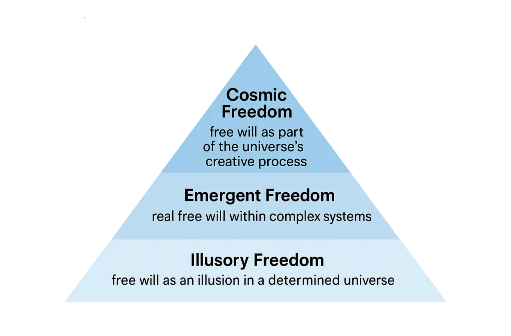

Free Will
The Structure Behind Human Freedom

Introduction
Free will is one of philosophy’s most enduring questions. If the universe from its creation is a unified whole, with consciousness as a fundamental phenomenon, what does it imply for our freedom?
This article presents a framework of three levels of free will within a structural dual-aspect monism, based on classical and modern philosophical thought.
Background
All reality is made of a single fundamental substrate, defined as a primordial ground that can be realized as both inner phenomenal experience and outer physical structure; while pure matter is one manifestation of this ground, conscious life emerges when this substrate organizes into complex systems, with brains specifically realizing the internal phenomenon that constitutes a subjective perspective.
With fundamental consciousness, the question of free will becomes more nuanced: is our freedom an illusion, an emergent property, or an expression of cosmic creativity?
The Levels of Free Will
1. Illusory Freedom (Deterministic Necessity)
At this level, the cosmos follows strict governed necessity. Every event, including our choices, arises from universal laws. Our sense of freedom is real in experience, but ultimately everything is determined. Freedom here comes from understanding necessity — knowing how we fit into the whole — not actual autonomy.
2. Emergent Freedom (Local Self-Determination)
Even in a unified whole, complex biological systems can develop self‑organizing properties. These systems evaluate options and generate genuinely new outcomes. Reality consists of events with internal direction and self-determination. Freedom at this level is real, but contextual, and emerges from the complexity within these systems.
3. Cosmic Freedom (Ontological Creativity)
On this level, the universe itself is a creative process. Our choices are not isolated— they are expressions of universal creativity. Individual will is a derivative of the universe’s creative will, and nature possesses inherent creative freedom. This freedom manifests gradually through history, with human actions forming a local channel of cosmic agency.
Discussion
These three levels can coexist:
- Microscopic illusory necessity - determinism rules fundamental processes.
- Mesoscopic emergent self-determination – genuine but context-bound agency.
- Macroscopic cosmic creativity – individuals as expressions of universal creativity.
This view offers a richer understanding of free will: we are neither fully free nor fully bound. Our freedom is local and observable, yet part of the cosmos’ ongoing creative unfolding.
Conclusion
Structural dual-aspect monism allows free will to exist at multiple levels:
- Illusory freedom – apparent, but illuminates necessity.
- Emergent freedom – real in complex systems.
- Cosmic freedom – reflects the universe’s creative will.
This synthesis connects classical and modern philosophy, offering a structured model for understanding free will in a fundamentally conscious universe.
References
Primary sources:
- Spinoza, B. Ethics.
- Hegel, G.W.F. Philosophy of Right.
- Whitehead, A.N. Process and Reality.
- Schopenhauer, A. The World as Will and Representation.
- Schelling, F.W.J. Philosophy of Nature.
Secondary sources / introductions:
- Nicholas Rescher, Process Metaphysics.
- William Seager (ed.), The Routledge Handbook of Panpsychism.